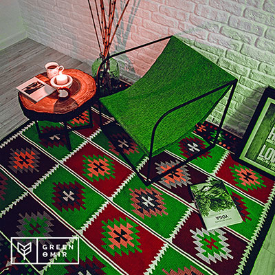

Согласно данным статистики, именно в Дании живут самые счастливые люди. Как такое возможно? Ведь практически половину дней в году там идет дождь, зима тянется долго, а лето пролетает буквально за считанные дни. Оказывается, вопреки сложным климатическим условиям - а может, даже благодаря им - датчане разработали философский подход к жизни во всех ее деталях, научившись жить с радостью и удовольствием даже в суровых неприветливых северных широтах. Философия счастья жителей Дании носит название hygge ("хюгге") и заключается в умении создавать душевную атмосферу, полную тепла и уюта. Касается это искусство не только собственно общения с другими людьми, но и оформления интерьеров кафе, ресторанов, офисных помещений и, конечно, загородных домов и квартир. К слову, ни один датчанин не станет проводить время в интерьере, если он недостаточно hygge, выбирая для дружеских посиделок наиболее теплое и душевное место, даже если оно находится не слишком близко к его месту работы или дому. Давайте же разберемся, каковы отличительные черты интерьера hygge, популярность которого стремительно набирает обороты во всем мире, в особенности, в северных странах.
Натуральные материалы
Пожалуй, самый "теплый" природный материал, использующийся в домашнем интерьере - это древесина. Деревянные столы, ножки стульев, кресел и табуретов, всевозможные ящики для хранения или даже декоративная поленница - все это очень свойственно интерьеру hygge. Конечно, такие детали интерьера не следует окрашивать, максимум - покрыть бесцветным защитным лаком, который не помешает любоваться природной фактурой дерева. Сюда же можно отнести плетеные корзины, кресла-качалки, любой декор из веток, шишек, соломы, пробковые коврики для ванной и максимально натуральные ткани и пряжу для текстильного оформления.
Милые мелочи
В интерьерах hugge огромное значение придается аксессуарам. Уютные шерстяные пледы, простые и мягкие декоративные подушки на диване и креслах, кованые принадлежности для камина, пушистые ковры, удобные столики, чтобы поставить кружку горячего шоколада или бокал вина как нельзя лучше подчеркнуть атмосферу hygge в гостиной. Не пренебрегайте зоной окна - поместите там живое растение в горшке, деревянную или глиняную статуэтку или простую объемную вазу и ни в коем случае не используйте подоконники в качестве полки для хозяйственных мелочей, документов и всего, что попадается под руку.
Для оформления спальни в стиле hygge выбирайте постельное белье из натуральных материалов, наиболее комфортное по тактильным ощущениям. Зону окна можно декорировать с помощью простых занавесок из неокрашенного льна, а в качестве акцентов поместить на подоконник или комод одно-два комнатных растения, очищающих воздух, а стены украсить стильными постерами.
Зона кухни и столовой обязательно должна быть удобной в эксплуатации, а сервировка стола - продуманной и приятной для глаз, но без излишней помпезности. Очаровательная вязаная "одежда" для посуды будет как нельзя кстати в интерьере hygge на кухне.
Даже в помещении ванной стоит уделить внимание воплощению философии счастья. Не скупитесь на расслабляющие эфирные масла, соли для ванны, компактные проигрыватели, которые можно будет включать, чтобы послушать любимую музыку, освобождаясь от напряжения прошедшего рабочего дня.
Разные сценарии освещения
Помимо основного потолочного светильника, датчане активно используют дополнительные источники света - разнообразные настольные и напольные светильники, бра и торшеры с уютными абажурами. Сами лампочки в светильниках ни в коем случае не должны давать холодный белый и тем более голубоватый свет - только теплые желтоватые и охристые оттенки, напоминающие золотистые отсветы восходящего солнца или заката в ясную погоду.
Живой огонь
Камин - один из ключевых элементов интерьера hygge. Чаще всего он встречается в гостиной, но при желании его можно обустроить и в спальне, и в кабинете. Никаких фальш-каминов и электрических моделей, настоящая философия hygge подразумевает именно живой огонь, способный не только доставить удовольствие от его созерцания, но и согревающий своим теплом в самом буквальном смысле.
Еще одна обязательная "огненная" деталь hygge - свечи. Они могут быть везде - на подоконниках, на полках, рядом с зеркалами (таким образом можно вдвое увеличить зрительный эффект тепла, душевной романтики и уюта) и даже на полу возле камина. Не забудьте о помещениях спальни и ванной - там свечи тоже будут очень к месту.
Условия для общения
Как известно, самая большая роскошь - это роскошь человеческого общения. Именно в ходе неторопливой дружеской беседы мы обмениваемся душевным теплом, расслабляемся и ощущаем столь необходимое для счастья внутреннее умиротворение. Поэтому основная задача интерьера hygge - создать максимально комфортные условия для общения в кругу семьи или с друзьями. Этому будут способствовать большие уютные диваны, кресла и мягкие стулья с удобной спинкой, столы для настольных игр, мобильные тележки с мини-баром, аккуратные полки для демонстрации своих увлечений, которые также могут послужить темой для беседы.
Дизайнерская мебель Алматы
Источник: pro-n.ru